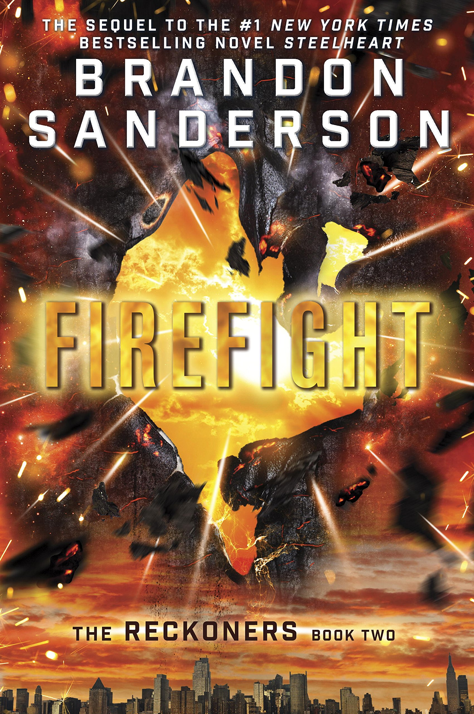

"Firefight"
- Read on 2015-04-22
- Rating: ️️️️️
- Format: 🎧 (18 hours 5 minutes)
Bad-simile-laden David Charleston lives in a world filled with people ("Epics") who have been given super powers. Problematically, those who use their abilities are filled with rage to the point of killing lots of people. David and a group of people are working to bring these Epics down, one person at a time, hoping to bring some sanity back to the world. In this book, they face a woman who can control (and see/interact through) water, as well as a man who can absorb and disperse heat (usually aimed at people, or entire cities). Combine these abilities, with the usual flourish of a weakness, a time limit, and the usual details and character play involved in a Brandon Sanderson novel, and you have an entertaining story.
- Prior: Freedom (TM)
- Next: Shadows for Silence in the Forests of Hell